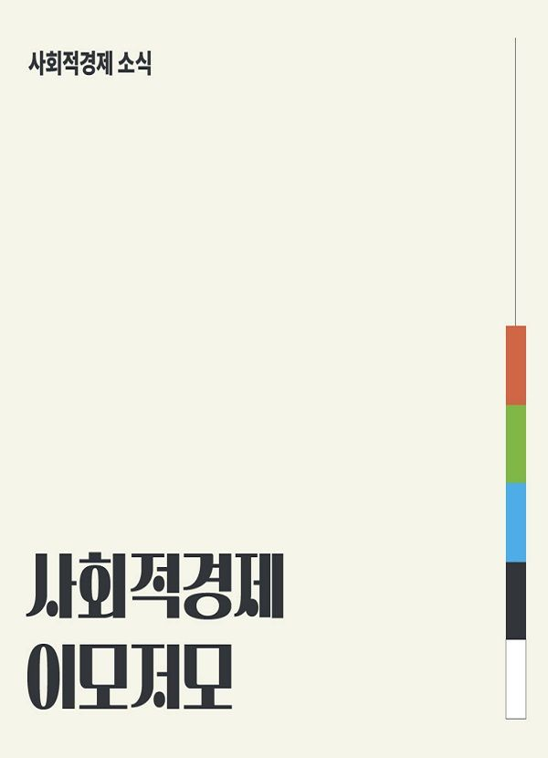
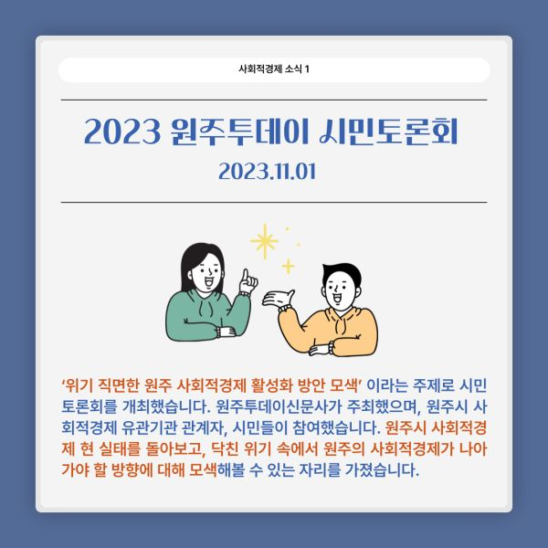
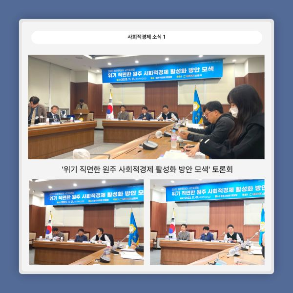
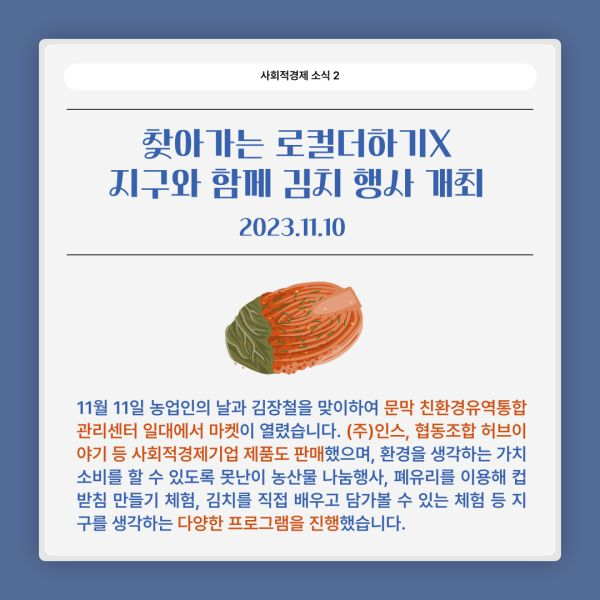
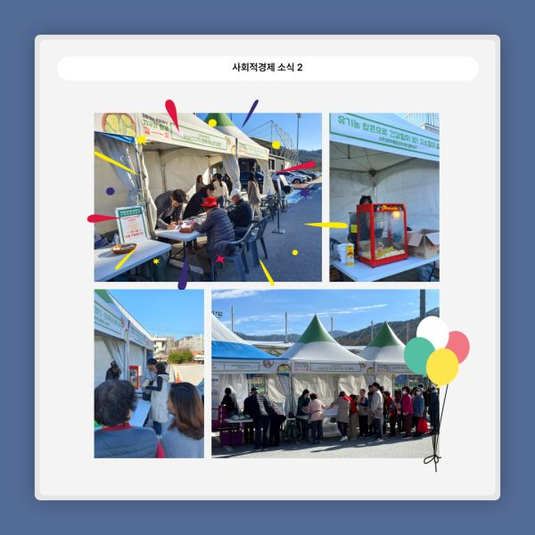
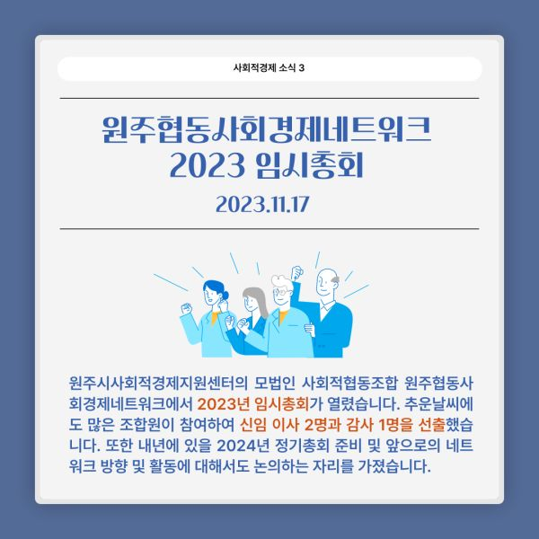
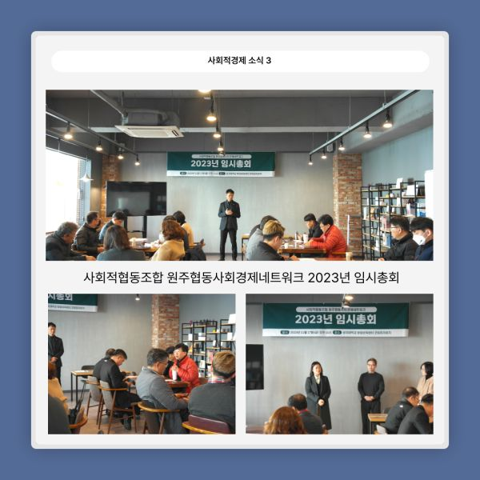
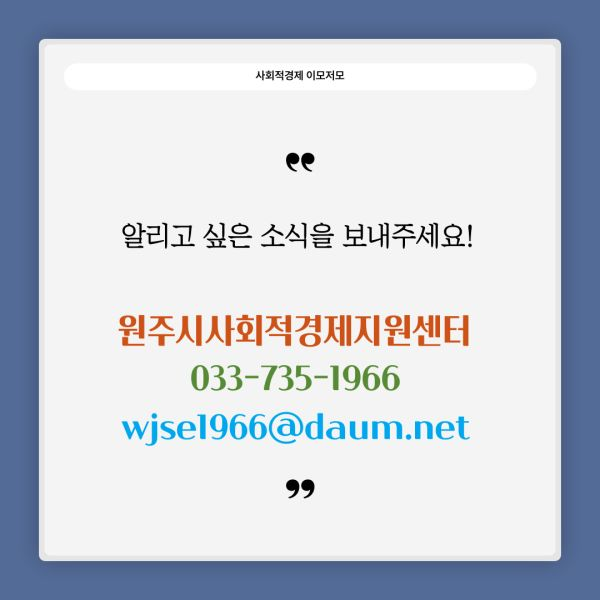

2023년 11월 사회적경제 소식✨
.
.
.
2023 원주투데이 시민토론회 (23.11.01)
‘위기 직면한 원주 사회적경제 활성화 방안 모색’ 이라는 주제로 시민 토론회가 열렸습니다! 원주시 사회적경제 현 실태를 돌아보고, 닥친 위기 속에서 원주의 사회적경제가 나아가야 할 방향에 대해 모색해볼 수 있는 자리를 가졌습니다!
-
-
찾아가는 로컬더하기X지구와 함께 김치 행사 개최(23.11.10)
김장철을 맞이하여 문막 친환경유역통합관리센터 일대에서 마켓이 열렸습니다. 주)인스, 협동조합 허브이야기 등 사회적경제기업 제품을 판매했으며 지구를 생각하는 다양한 프로그램도 열렸습니다.
-
-
원주협동사회경제네트워크 2023 임시총회(23.11.17)
원주시사회적경제지원센터의 모법인 사회적협동조합 원주협동사회경제네트워크에서 2023년 임시총회가 열렸습니다. 이날 행사에서 신임 이사 2명과 감사 1명을 선출했습니다.
.
.
#원주시사회적경제지원센터 #원주협동사회경제네트워크 #원주투데이 #시민토론회 #원주마켓 #인스 #협동조합허브이야기 #사회적경제 #사회적경제기업 #원주사회적경제